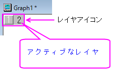
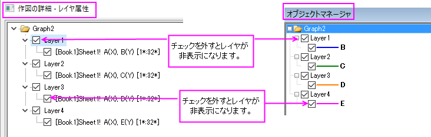
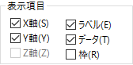
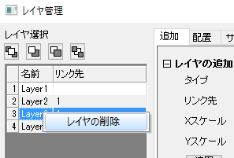

グラフ中のレイヤ、プロットやオブジェクトの非表示と削除
Labels-Data-Layer-Hide
グラフページ中の様々な要素を非表示にしたり、削除したりすることが出来ます。要素の「非表示」は一時的なものですので、簡単に元に戻すことが出来ます。「削除」は恒久的なので、元に戻すことはほぼ出来ません。
グラフ要素が非表示になっているときは、あらゆる出力が出来ないのでご注意ください。そのため、グラフの印刷やエクスポートの際に、グラフからグラフ要素を一時的に削除したい場合には、ここで説明する手順を実行します。
グラフレイヤを非表示にする
アクティブなグラフレイヤ以外の全てのレイヤを非表示にするには:
- メインメニューから表示: 表示様式： アクティブレイヤのみ表示 を選択、またはグラフレイヤアイコンの上で右クリックし、他のレイヤを隠すを選択します。
- 全てのレイヤを表示するには、 表示： 表示様式： アクティブレイヤのみ表示 または 他のレイヤを隠すを選択します。
- 
他のレイヤを非表示にするには
- レイヤアイコンを右クリックし、ショートカットメニューからレイヤを隠すを選択します。
- 全てのレイヤを表示するには、ショートカットメニューから 他のレイヤを隠す を再度選択します。特定の玲汰を再度表示するには、色が薄くなったレイヤアイコンで右クリックし、 レイヤ隠す のチェックを外します。
特定のグラフレイヤを非表示にするには
- レイヤアイコンを右クリックし、ショートカットメニューから「レイヤを隠す」を選択します。レイヤ表示するには、色が薄くなったレイヤアイコンで右クリックし、レイヤ隠す を再度選択します。
- 作図の詳細の左側パネルで 、レイヤアイコンの隣にあるチェックマークを外します。再選択して表示
- オブジェクトマネージャーのパネルで 、レイヤアイコンの隣にあるチェックマークを外します。再選択して表示
- 
データプロットを非表示にする
データプロットの表示/非表示
- データプロットを右クリックし、ショートカットメニューからデータセレクタプロットを隠す またはそれ以外を隠す を選択します。
- 作図の詳細 ダイアログで、データプロットの隣にあるチェックボックスのチェックを外す、またはチェックを入れます。
- オブジェクトマネージャー パネルで、データプロットの隣にあるチェックボックスのチェックを外す、またはチェックを入れます。
ページ上ですべてのデータプロットを非表示または表示するには
- 表示： 表示様式： データ」の横にあるチェックを外します。
- データプロットを表示するには、表示： 表示様式： データ を再度選択します。(このメニューコマンドにチェックが入っているとき、データプロットは表示されています)別の方法としては、レイヤを右クリックし、ショートカットメニューから全てのデータを表示を選びます。
1つのレイヤに複数プロットが含まれているグラフを別々のレイヤに分ける方法もあります。グラフとレイヤの編集をご覧ください。
グラフレイヤにある他の要素を非表示にするには
ラベルを非表示にする
- メニューから 表示： 表示様式： ラベル のチェックを外します。このメニューコマンドにチェックが付いているとラベル(軸タイトル、凡例、テキスト、描画オブジェクト)が表示されます。
ラベルを表示するには、表示： 表示様式： ラベル のチェックを入れます。
|
Note: 非表示のラベル(他のオブジェクト)があるグラフを印刷するには、 表示： 表示様式： ラベル にチェックを入れてから印刷します。
|
プロットの詳細で、軸、ラベル、プロットを非表示にする
作図の詳細ダイアログの表示 タブ でも、表示/非表示のレイヤレベル制御が出来ます。レイヤレベルを確実に開くには、メニューの(フォーマット: レイヤを選択します。)

編集オプションの適用範囲には少し違いがあります。「作図の詳細」ダイアログボックスは、例外なく、すべての軸、すべてのラベル、すべてのデータプロットを非表示/表示にします。しかし、最終的な効果は、グラフ要素を選択して、「表示」メニューやショートカットメニューコマンドを使って非表示にするのと全く同じです。「作図の詳細」ダイアログボックスを使って非表示にしたグラフ要素は印刷/エクスポートされません。
グラフレイヤの削除
レイヤを削除するには
- レイヤアイコンを右クリックして、「レイヤの削除」を選択します。
- レイヤ選択してクリックし(レイヤフレームは緑の選択ハンドルで表示されます)、キーボードの Delete キーを押します。
- レイヤ管理ダイアログ かあレイヤを削除するには、ダイアログの左パネルにあるレイヤ上で右クリックし、レイヤの削除 を選択します。
- 
グラフレイヤを削除すると、レイヤの中にあるプロットや、全てのオブジェクト(グラフ凡例、テキストオブジェクトなど) も一緒に削除されます。元のワークシートや行列データは削除されません。
データプロットの削除
データプロットを削除するには
- グラフウィンドウにあるデータプロットで右クリックするか、オブジェクトマネージャーのプロット上で右クリックし、削除 を選択します。
- プロットをクリックして選択し、Deleteキーを押します。
- 作図の詳細 ダイアログからプロットを削除するには、ダイアログの左側パネルでプロットを選択し、右クリックして削除を選択します。
これらのアクションを行っても、元のワークシートや行列はプロジェクトから削除されません。しかし、元のワークシートや行列を削除すると、グラフ上のデータプロットは削除されますので、注意してください。
| Note: プロットグループ の一部であるプロットを削除すると、グループ内の他のプロットも削除されます。 |